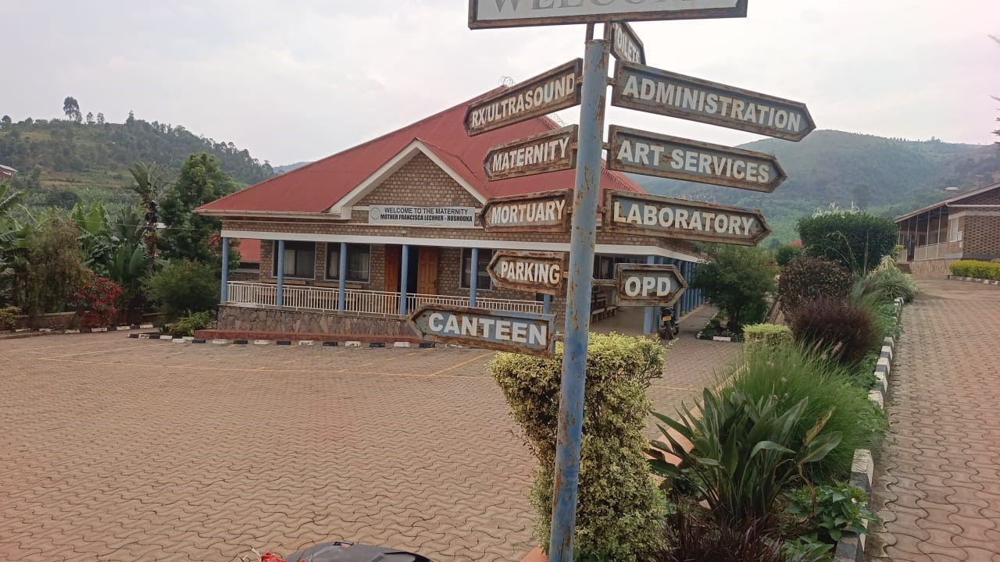
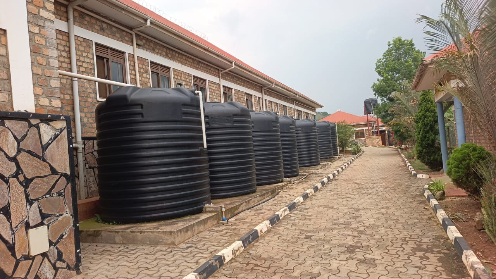
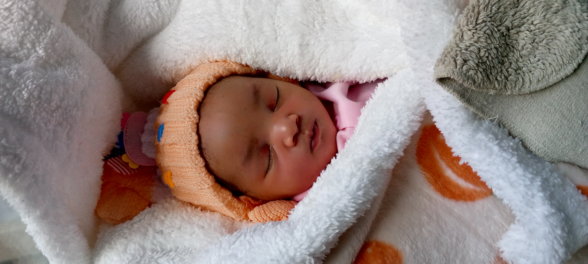

Welcome to Our Health Centre
We provide quality medical services to the community of Rushooka, Ruhega, Kayonza and beyond in Ntungamo District, along Kabale Road.

Rushooka, Ruhega, Kayonza - Ntungamo District
We provide quality medical services to the community of Rushooka, Ruhega, Kayonza and beyond in Ntungamo District, along Kabale Road.
Mother Franciscka Lechner Health Centre IV is a trusted healthcare facility serving the people of Ntungamo District and surrounding areas. We are committed to providing affordable, compassionate and quality healthcare to all our patients.
Our dedicated team of medical professionals works around the clock to ensure the well-being of our community.

General consultations and treatment for all patients.
Safe delivery and maternal healthcare for mothers.
Accurate diagnostic and laboratory testing services
Emergency ambulance services available 24/7.




